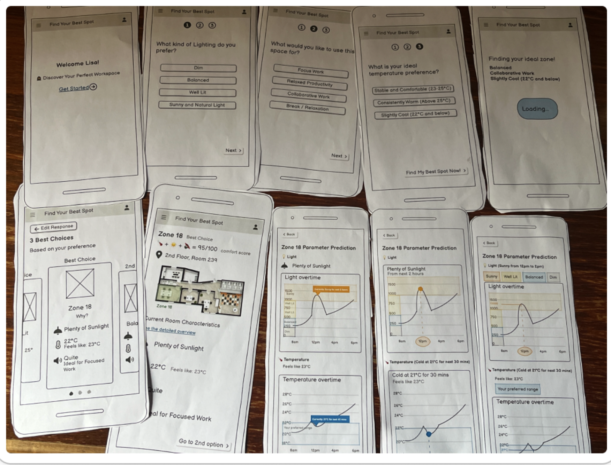
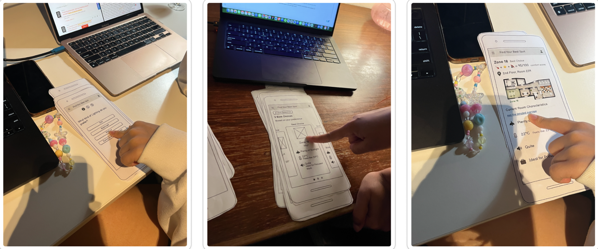
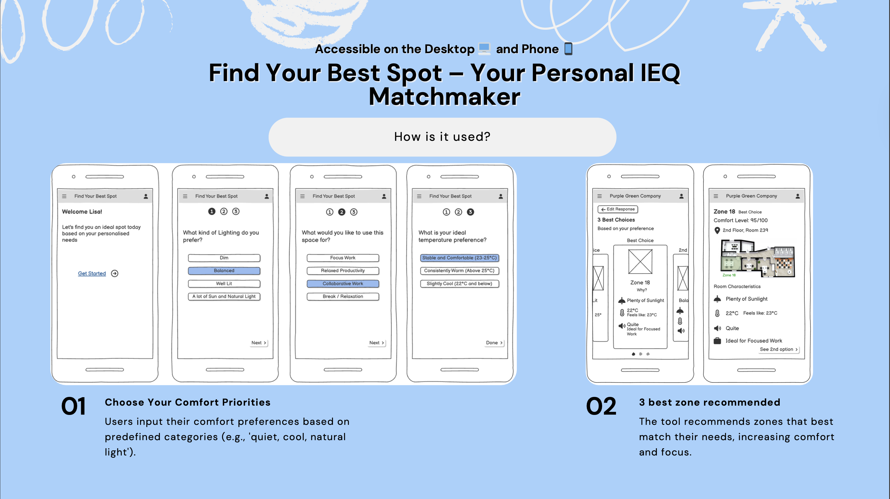
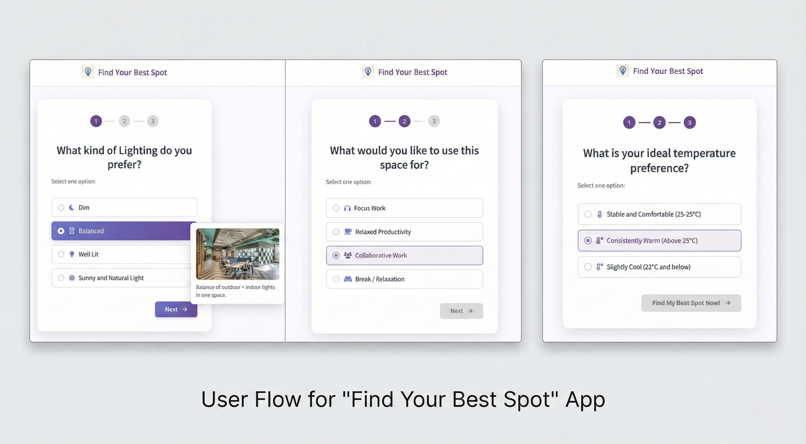
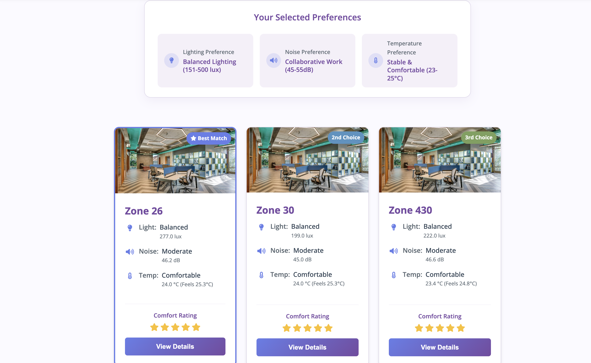
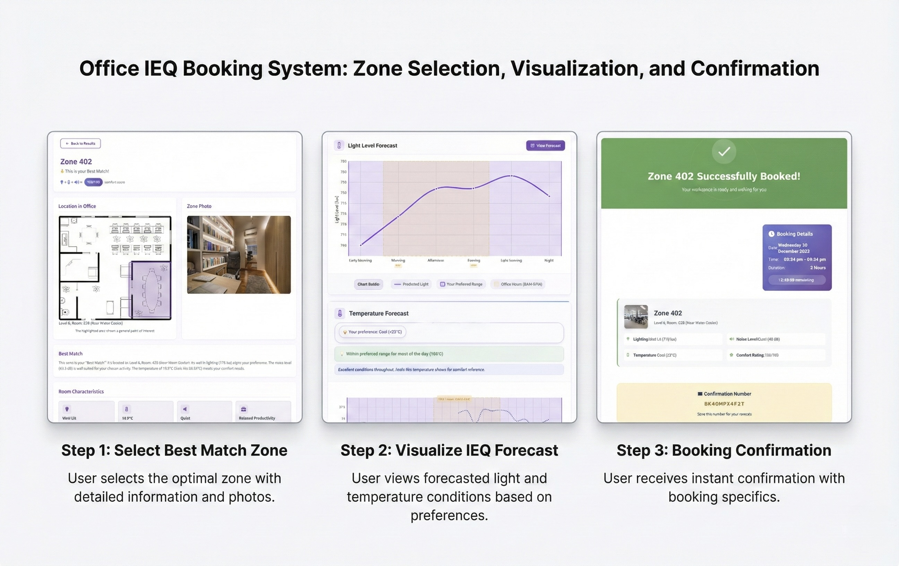

Productivity is personal. Research shows that poor indoor environmental quality can reduce productivity by up to 20%, while personalised control can boost it by 25%.
Modern buildings collect rich Indoor Environmental Quality (IEQ) data (temperature, light, noise), but this information usually sits buried in dashboards that employees never see.
The Goal
Design an intuitive web tool that helps employees find their best spot quickly by translating raw data into plain-language recommendations.
I started by analyzing SAMBA IEQ sensor data across multiple office zones. Instead of jumping straight into UI, I treated this like a data story.
The "Morning Chill" Pattern:
Data revealed a sharp temp drop at 7–8 AM across all zones, validating user complaints about freezing mornings despite "normal" daily averages.
Noise Zoning:
Identified specific zones (like Zone 243) that consistently exceeded 60dB, making them mathematically unsuitable for the "Focus Work" (< 40dB) category.
Light & Alertness:
While morning light varied wildly, Zones 48 & 49 remained consistently bright, identifying them as prime candidates for high-alertness tasks.
My Approach: Data as a Story
I realized this wasn’t just a seat-finder—it needed to be a matchmaker.
But before building the final interface, I needed to see if users could actually understand this data.
The Translation Strategy
The Data Challenge: Confronted with millions of raw data points in Excel, I realized that a direct feed would be meaningless to a busy employee.
My exploratory analysis revealed that raw sensor data is noisy and intimidating. A typical user doesn't care if a sensor reads “47 dB”—they just want to know if it feels “Quiet”.
To bridge this gap, I developed a logic layer I call Adaptive Temporal Granularitybefore entering the design phase:
Lighting (Broad Grouping): Excel data showed chaotic hourly spikes, so I smoothed this into broad bands (e.g., "Morning Brightness") to match human perception.
Noise (Thresholds): I used conditional formatting heatmaps to identify specific decibel thresholds (e.g., >60dB) that mathematically ruled out "Focus Work."
Visual Encoding: I decided to replace complex line charts with intuitive color gradients (Cool → Warm) to communicate comfort at a glance.
From Chaos to Clarity: I analyzed raw heatmaps in Excel (top) to define the logic for the simplified user interface (bottom).
Validating with Real Users
Before writing a single line of code, I needed to ensure the logic held up. I conducted scenario-based usability testing with 8 participants using low-fidelity paper prototypes.
The "Data Overload" Discovery
The concept resonated immediately, achieving a high 87.8 SUS Score. However, testing revealed two critical friction points that I had to address:
Key Iterations from Feedback
Text over Trends: My initial detailed line charts caused cognitive overload. Users hesitated to interpret x/y axes, so I added plain-text summaries like "Good match for the next 4 hours".
The "Occupancy" Gap: Users flagged a major logic hole: finding a "perfect" spot is useless if it's already taken. I added "Live Availability" status indicators to the final UI to solve this.


From paper to insight: Observing real-time user hesitation on specific screens (bottom) helped me pivot the design before development.
The Experience Flow
The final result: A "matchmaker" loop that takes user input and returns personalized space recommendations instantly.
01
Set Priorities
A short quiz asks about activity (Focus vs. Collab) and sensory preferences.
02
Get Matched
The system compares preferences against historic IEQ data to rank the top 3 zones.
03
View Forecast
Interactive charts show how conditions will change over the next few hours.

Impact & Implementation
This wasn't just a design concept. I built the fully functional, responsive web application using HTML5, CSS3, and JavaScript (ES6).
The Engineering Challenge
The core challenge was translating static CSV sensor data into a live recommendation engine without a heavy backend.
Data Visualisation: leveraged Plotly.js to render interactive charts that map user comfort zones against specific time blocks.
Client-Side Logic: Wrote custom JavaScript to fetch and parse raw CSV files (`samba_noise.csv`, `samba_TA.csv`) directly in the browser.
Algorithm: Developed a scoring function that normalizes disparate metrics (Lux, dB, °C) into a single "Comfort Match" score.
Code Snapshot:
This sample shows the actual client-side logic powering the IEQ dashboard which includes the raw CSV data fetching, parsing, and Plotly.js chart rendering and demonstrating that the system was fully implemented, not just prototyped.
Visual Identity & Design System
The interface needed to be functional yet calming. I established a design system that separates "data" from "action."
Primary Theme: I used a deep purple (#764ba2) to convey professionalism, avoiding the urgency often associated with red or stark black-and-white enterprise tools.
Data Semantics: Instead of a standard "Red/Green" (Danger/Safe) scale, I implemented a "Cool-to-Warm" gradient in Plotly.js to represent temperature and light preferences neutrally.
Typography: 'Open Sans' was used for the headers and body text as it is a very popular font and legible for web-apps.
Design System Snapshot: Translating the "Calm Professional" concept into reusable UI tokens.
The Final Product
A responsive, browser-based application that turns environmental data into actionable comfort.
01. Intuitive Onboarding
Simple, human-readable questions replace complex filter menus. Users set preferences for Light, Noise, and Temperature in under 30 seconds.

02. Smart Recommendations
The core "Matchmaker" engine. Zones are ranked by a weighted 'Comfort Score' (5-star comfort rating). The "Best Match" is highlighted with clear reasoning.

03. IEQ Booking & Visualisation Flow
Once users find a promising zone, the system guides them through a
simple three-step flow that combines visualisation and action.
Step 1
Select Best-Match Zone
Users review their recommended zones with floor-plan highlights and photos.
Step 2
Visualise IEQ Forecast
Forecast charts display expected light and temperature overlaid with preferences.
Step 3
Confirm Booking
A clear confirmation screen summarises booking details.

Office IEQ Booking System: From personalised zone selection to booking confirmation.